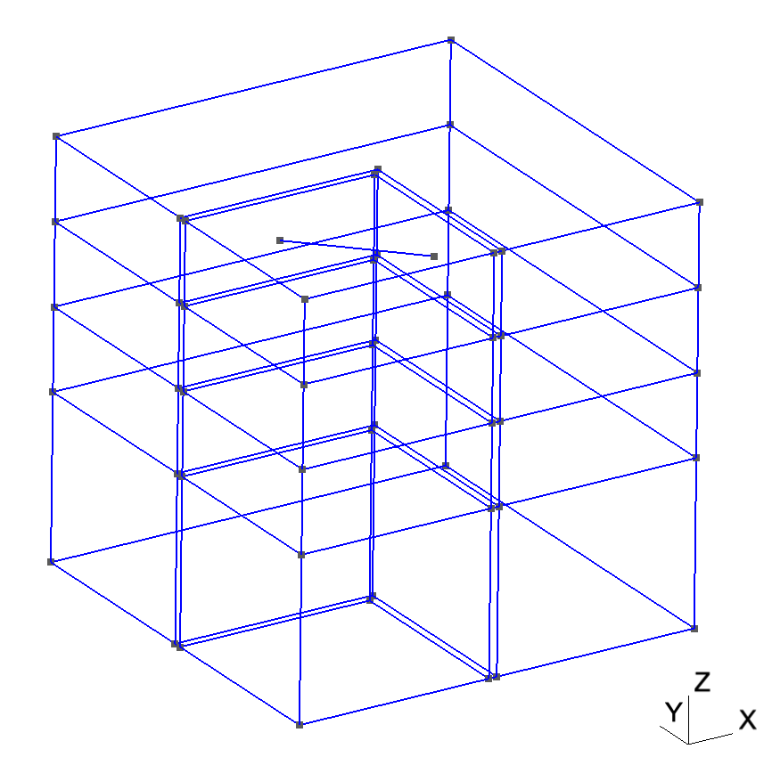
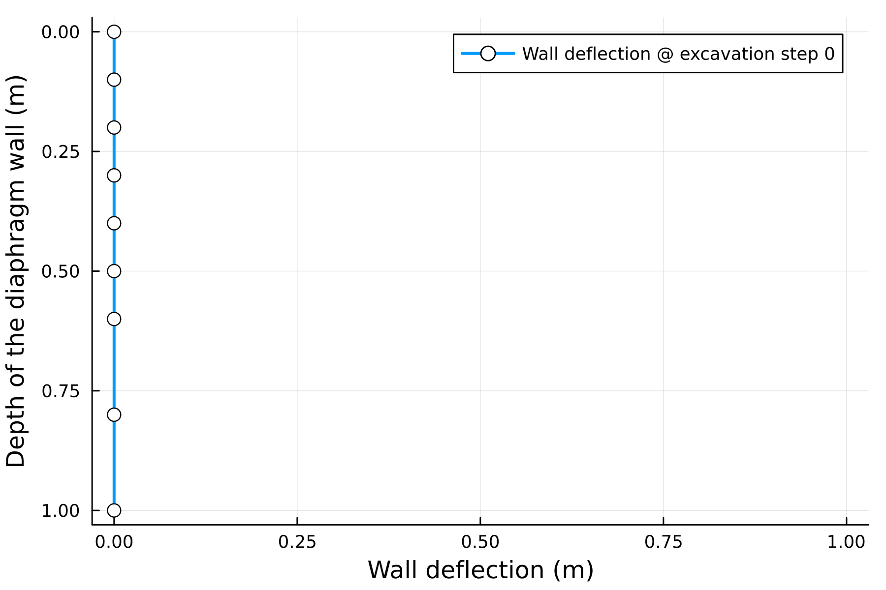

Full 3D Excavation
In this tutorial, we will show an example of braced excavation with DPSSO constitutive model. The braced excavation model contains the soils, retaining walls, interaction between the soils and structures, and props.
Generate mesh for braced excavation
A unit element mesh is generated by Gmsh with size of 1 x 1 x 1 m. Two stage excavations will be calculated with the excavation size to be 0.48 x 0.48 x 0.20 m. The thickness of the retaining wall is 0.02 m. A prop is installed after the first stage of excavation at the locations of (0.24, 0.48, 0.90) and (0.48, 0.24, 0.90). Figure 1 shows the geometry of the model, the mesh is hidden for the visualisation.
julia> project_name = "BracedExcavation"
julia> excavation(project_name, false) Info : 303 nodes 443 elements
Info : Writing 'BracedExcavation.msh'...
Info : Done writing 'BracedExcavation.msh'
Figure 1. The excavation mesh generated by Gmsh.
Input parameters
For the braced excavation, we need at least three materials: soil, wall, and prop, which are all specified in BracedExcavation.PARAMSDT. For the interface elements, we need to input the $K_s$ and $K_n$ as the normal and tangential stiffness for the interaction between soils and structures. The friction angle and cohesion are also necessary for the frictional interface elements to incorporate the Coulomb's law.
julia> PARAMS = PARAMSDT(CONSTM="DPSSO")PARAMSDT(1.0e6, 0.2, 1.0e9, 0.3, 2.0e9, 0.3, 2000.0, -9.81, 1.0, 1.0, 1.0, 1.0, -200000.0, -0.4, 20, 20, "DPSSO", 0.385, 0.1, 0.3490658503988659, 0.0, 1.0e8, 1.0e6, 0.3490658503988659, 0.0)Read the mesh data
Read the mesh data generated by Gmsh through BracedExcavation.readgmsh_excavation, and save them to the BracedExcavation.MESH structure.
julia> mesh = MESH()BracedExcavation.MESH(0, #undef, #undef, #undef, #undef, #undef, #undef, #undef, #undef, #undef, #undef, #undef, #undef, #undef)mesh0, mesh1, mesh2, Snnodes = readgmsh_excavation(project_name * ".msh")
Info : Reading 'BracedExcavation.msh'...
Info : 246 entities
Info : 303 nodes
Info : 172 elements
Info : Done reading 'BracedExcavation.msh'
(Snnodes, numISelem, maxNodeTag, maxElemTag) = (90, 32, 303, 172)Save the mesh data to the MESH struct defined by BracedExcavation.MESH, for the global calculation.
mesh.coord = mesh0[1]
mesh.mat = getindex.(mesh0[2], 1)
mesh.etpl = getindex.(mesh0[2], 2)
mesh.ngp = getindex.(mesh0[2], 3)Initialise the materials
The excavation model contains multiple materials and components, the initialisation of the GP data struct BracedExcavation.GP is more complicated than the triaxial element tests.
julia> gps = gpmaterial(mesh, PARAMS) Any[GP(1.0e9, 0.0, 0.3, 0.0, 0.0, #undef, #undef, false, [0.0, 0.0, 0.0, 0.0, 0.0, 0.0], [0.0, 0.0, 0.0, 0.0, 0.0, 0.0], [0.0, 0.0, 0.0, 0.0, 0.0, 0.0], [0.0, 0.0, 0.0, 0.0, 0.0, 0.0], [0.0, 0.0, 0.0, 0.0, 0.0, 0.0]), GP(1.0e9, 0.0, 0.3, 0.0, 0.0, #undef, #undef, true, [0.0, 0.0, 0.0, 0.0, 0.0, 0.0], [0.0, 0.0, 0.0, 0.0, 0.0, 0.0], [0.0, 0.0, 0.0, 0.0, 0.0, 0.0], [0.0, 0.0, 0.0, 0.0, 0.0, 0.0], [0.0, 0.0, 0.0, 0.0, 0.0, 0.0]), GP(1.0e9, 0.0, 0.3, 0.0, 0.0, #undef, #undef, false, [0.0, 0.0, 0.0, 0.0, 0.0, 0.0], [0.0, 0.0, 0.0, 0.0, 0.0, 0.0], [0.0, 0.0, 0.0, 0.0, 0.0, 0.0], [0.0, 0.0, 0.0, 0.0, 0.0, 0.0], [0.0, 0.0, 0.0, 0.0, 0.0, 0.0]), GP(1.0e9, 0.0, 0.3, 0.0, 0.0, #undef, #undef, true, [0.0, 0.0, 0.0, 0.0, 0.0, 0.0], [0.0, 0.0, 0.0, 0.0, 0.0, 0.0], [0.0, 0.0, 0.0, 0.0, 0.0, 0.0], [0.0, 0.0, 0.0, 0.0, 0.0, 0.0], [0.0, 0.0, 0.0, 0.0, 0.0, 0.0]), GP(1.0e9, 0.0, 0.3, 0.0, 0.0, #undef, #undef, false, [0.0, 0.0, 0.0, 0.0, 0.0, 0.0], [0.0, 0.0, 0.0, 0.0, 0.0, 0.0], [0.0, 0.0, 0.0, 0.0, 0.0, 0.0], [0.0, 0.0, 0.0, 0.0, 0.0, 0.0], [0.0, 0.0, 0.0, 0.0, 0.0, 0.0]), GP(1.0e9, 0.0, 0.3, 0.0, 0.0, #undef, #undef, false, [0.0, 0.0, 0.0, 0.0, 0.0, 0.0], [0.0, 0.0, 0.0, 0.0, 0.0, 0.0], [0.0, 0.0, 0.0, 0.0, 0.0, 0.0], [0.0, 0.0, 0.0, 0.0, 0.0, 0.0], [0.0, 0.0, 0.0, 0.0, 0.0, 0.0])]
⋮
Any[GP(0.0, 0.0, 0.0, 1.0e6, 1.0e8, #undef, #undef, false, [0.0, 0.0, 0.0, 0.0, 0.0, 0.0], [0.0, 0.0, 0.0, 0.0, 0.0, 0.0], [0.0, 0.0, 0.0, 0.0, 0.0, 0.0], [0.0, 0.0, 0.0, 0.0, 0.0, 0.0], [0.0, 0.0, 0.0, 0.0, 0.0, 0.0]), GP(0.0, 0.0, 0.0, 1.0e6, 1.0e8, #undef, #undef, false, [0.0, 0.0, 0.0, 0.0, 0.0, 0.0], [0.0, 0.0, 0.0, 0.0, 0.0, 0.0], [0.0, 0.0, 0.0, 0.0, 0.0, 0.0], [0.0, 0.0, 0.0, 0.0, 0.0, 0.0], [0.0, 0.0, 0.0, 0.0, 0.0, 0.0]), GP(0.0, 0.0, 0.0, 1.0e6, 1.0e8, #undef, #undef, false, [0.0, 0.0, 0.0, 0.0, 0.0, 0.0], [0.0, 0.0, 0.0, 0.0, 0.0, 0.0], [0.0, 0.0, 0.0, 0.0, 0.0, 0.0], [0.0, 0.0, 0.0, 0.0, 0.0, 0.0], [0.0, 0.0, 0.0, 0.0, 0.0, 0.0])]Geostatic state
The geostatic static is set by the simplified K0 approach. The key output of the geostatic state for the braced excavation is the obtained the equivalent nodal forces due to the excavation at each stage by BracedExcavation.geostatic_excavation. The files can be visualised by paraview as shown in Fig. 2. The wall deformation at the corner of the retaining wall is visulised throught BracedExcavation.lineplot_excavation, as shown in Fig. 3.
julia> fexc1, fexc2, kindex = geostatic_excavation(mesh, gps, mesh1, mesh2, PARAMS.DENS, PARAMS.GRAV, PARAMS.K0, PARAMS.H)
julia> postpro(mesh.uvw, mesh.lstp, mesh.coord, mesh.etpl, gps, outdir)
julia> lineplot_excavation(mesh.lstp, mesh.uvw, mesh.coord, Snnodes, outdir)
Figure 2. Left: Model mesh of geostatic state; Right: Vertical stress of geostatic state.

Figure 3. The wall deflection of braced excavation at the geostatic state.